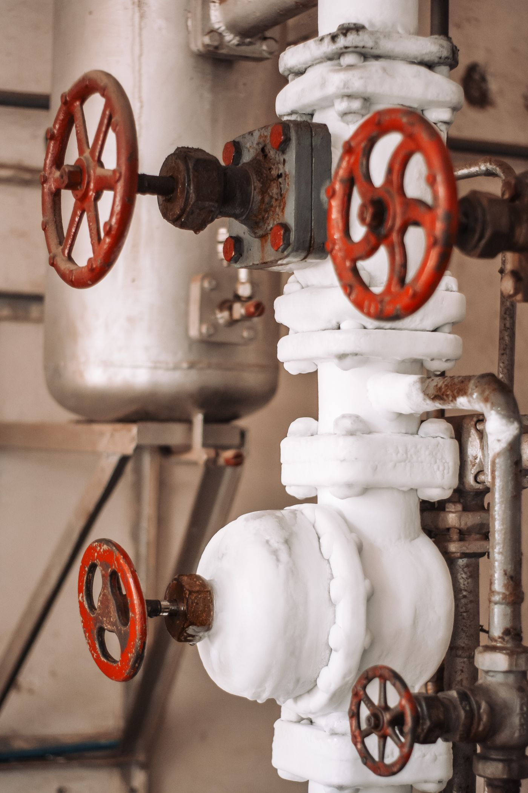

RUN SHEET · KESSLER LOW-TEMPERATURE LABORATORY · LEIDEN
Levitation is a measurement, not a miracle.
I am Dr Sabine Kessler, a low-temperature superconductivity researcher. My laboratory characterises superconducting materials and magnet systems for the people who build with them: critical currents measured against field and temperature, flux-pinning forces measured on a load cell, and levitation demonstrators built for science centres with their real margins printed on the exhibit text. The honest starting point, printed here rather than in a footnote: a levitating puck is flux pinning, not a transport revolution — pinning is stable, it is genuinely remarkable, and it is lossy, and the losses are in every report I sign. No result leaves this lab on a single cooldown.
The lift pressure tool
RUNS ON TABLE 1, BELOWEvery levitation conversation in this lab starts with the same ceiling. The most force a magnetic field can exert on a superconductor is set by the magnetic pressure, P = B² / (2μ0), with μ0 = 4π × 10−7 = 1.2566 × 10−6 H/m. Multiply by the sample’s face area for force; divide by g = 9.81 m/s² for the mass that force could hold. That is the ceiling — what a real pinned sample delivers is a fraction of it, which is why the lab measures force rather than admiring arithmetic. Pick a magnet system from Table 1, set the field and the sample area.
| System | Field range | Where it works |
|---|---|---|
| NdFeB pole array (N52) | 0.20–0.60 T | The demonstrator workhorse. Strong at the pole face, falls fast with gap — the number is quoted at the face, always. |
| Iron-core electromagnet, 25 mm gap | 0.50–2.00 T | The bench standard for force measurement: adjustable, mapped, and honest about its gap. |
| NbTi solenoid, persistent mode | 2.00–8.00 T | Bath cryostat at 4.2 K. Where wire and tape come to be believed or not. |
| Nb₃Sn high-field insert | 8.00–14.00 T | For Jc(B) mapping at the top of the range. Nobody demonstrates levitation up here; this is characterisation country. |
| Material | Tc | Coolant it implies |
|---|---|---|
| Mercury (Hg) | 4.15 K | Liquid helium — Leiden, 1911, the first entry in this science |
| NbTi | 9.2 K | Liquid helium bath, 4.2 K |
| Nb₃Sn | 18.3 K | Liquid helium bath, 4.2 K |
| MgB₂ | 39 K | Closed-cycle cryocooler, ~20 K class |
| REBCO (YBCO family) | 92 K | Liquid nitrogen, 77 K |
| BSCCO-2223 | 108 K | Liquid nitrogen, 77 K |
Read Table 2 as a price list. Everything that must work below ~20 K is a helium conversation, and helium is bought by the litre, recovered where possible, and gone where not. The nitrogen materials are cheaper to run and weaker at field; the helium materials are the reverse. Any characterisation quote that does not itemise cryogens is hiding its largest consumable.
CONTROLS — SYSTEM, FIELD, AREA
MAGNET SYSTEM (TABLE 1)
FIELD AT THE SAMPLE, B
SAMPLE FACE AREA, A
WORKING — EVERY STEP PRINTED

Services register
WHAT THE LAB TAKES IN| Service | Client type | Material / system | Status |
|---|---|---|---|
| S.01 · Critical-current characterisation, Jc(B,T) Transport measurement across field and temperature, reported as curves with uncertainty, never as a single hero number. |
Magnet & wire manufacturers | NbTi · Nb₃Sn · REBCO tape | BOOKING |
| S.02 · Levitation-force measurement Field-cooled force on a calibrated load cell, with the cooling history logged as part of the result. |
Materials groups · magnet manufacturers | Bulk REBCO · MgB₂ | BOOKING |
| S.03 · Flux-pinning & AC-loss studies Pinning behaviour and hysteretic loss — the losses are the deliverable, printed, not apologised for. |
University & industry research groups | Bulk & tape, 20–92 K | WAITLIST — CRYOSTAT 2 |
| S.04 · Demonstrator design & build Museum levitation exhibits engineered to their real force margins, with refill schedules and honest exhibit text written by the lab. |
Museums & science centres | REBCO puck · NdFeB array | 2 SLOTS / YEAR |
| S.05 · Independent replication measurement A claimed result, re-measured cold, by a lab with no stake in it. Queue priority over commercial work. |
Journals · funders · research groups | Claimed materials, any system | BY REFERRAL |
Fees & the estimator
THE PRICE SHAPE, PRINTEDCharacterisation is priced the way it is consumed: by the day, by the cooldown, and by the litre. What moves the price is cooldown cycles and cryogens first — every thermal cycle is helium, time and a fresh chance for a connector to fail — then the field and temperature range demanded. The conclusion never moves the price: a sample that fails its datasheet costs exactly what a sample that passes costs, and Sample File 01 is the proof of that policy.
| Line | Rate | Basis |
|---|---|---|
| Characterisation day | €1,350 | Per day; includes one cooldown and its measurement shift |
| Additional cooldown cycle | €420 | Per extra warm-up / cool-down beyond the day’s first |
| Liquid helium, at cost | €34 / litre | Billed at cost; recovered helium credited back at the same rate |
| Full Jc(B,T) map | €1,900 | Fixed add-on: the full field–temperature surface, not a single point |
| Report with uncertainty budget | €650 | Fixed: every figure with its budget, method and cooldown log |
ESTIMATOR — BUILD A CHARACTERISATION
MEASUREMENT DAYS
ADDITIONAL COOLDOWN CYCLES
LIQUID HELIUM (AT COST)
ADD-ONS
An estimate, not a quote: the fixed quote follows a sample intake call and a look at the material. Helium is the volatile line — its price moves, and the quote states the rate on the day, in writing.
“Kessler’s report cost us a product grade and saved us a recall. The distribution was in the report, not just the average — eighteen percent below our own datasheet at 12 tesla, and she showed her cooldowns. We re-graded the batch.”
HEAD OF QUALITY, SUPERCONDUCTING WIRE MANUFACTURER — ON SAMPLE FILE 01, THE DATASHEET THAT WASN’T (FULL FILE ON THE SAMPLE FILES PAGE). CLIENT NAME WITHHELD UNDER NDA; REFERENCE AVAILABLE ON REQUEST.
Have a sample that needs believing — or disbelieving?
Send the material, its form factor, and the field and temperature range you care about. The lab replies with the cooldown plan and the fixed quote — and if the honest answer is that the measurement cannot settle your question, that is the reply you will get, free of charge.